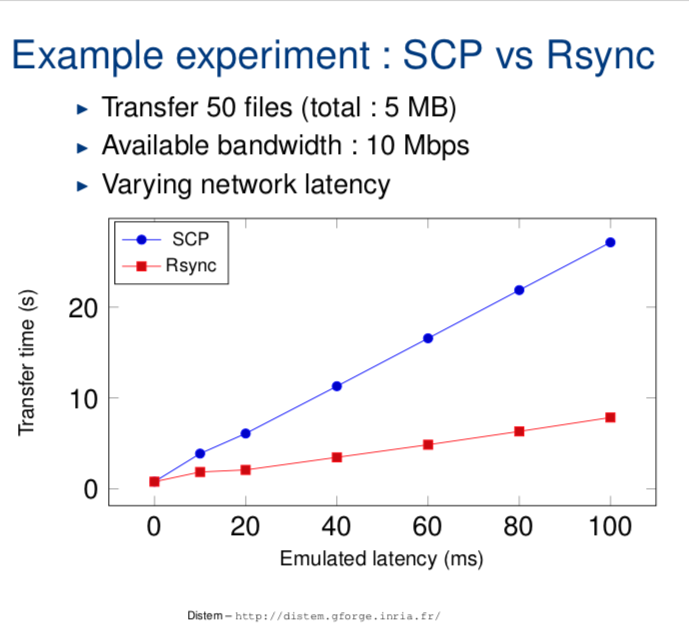
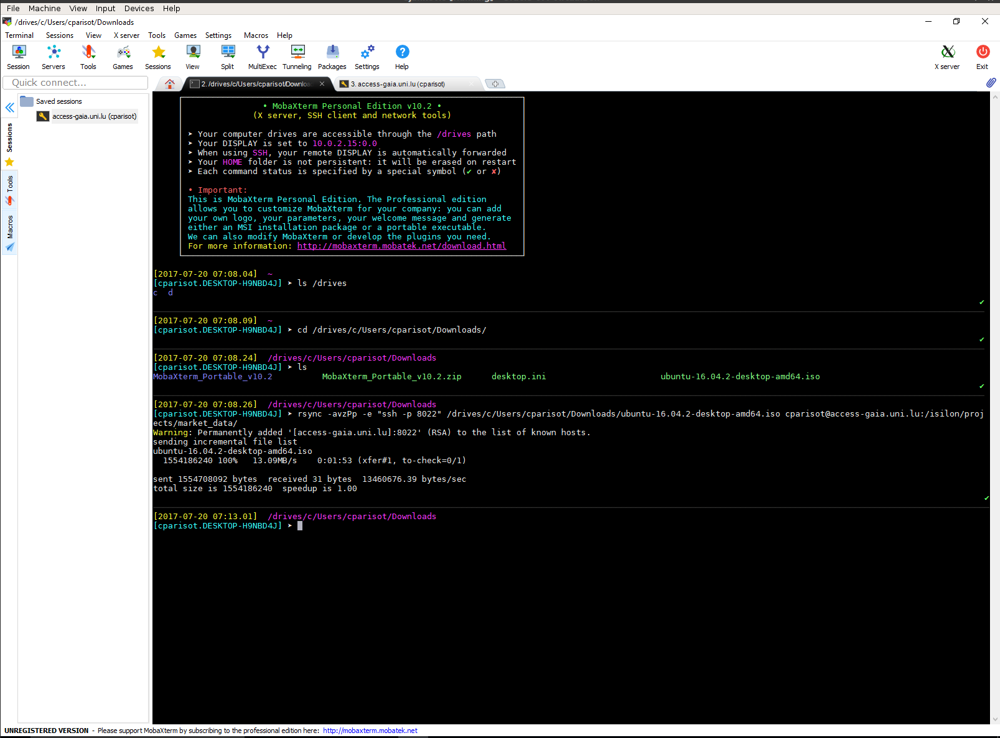

Data Transfer to/from/within UL HPC Clusters¶
Introduction¶
Directories such as $HOME, $WORK or $SCRATCH are shared among the nodes of the cluster that you are using (including the login node) via shared filesystems (SpectrumScale, Lustre) meaning that:
- every file/directory pushed or created on the login node is available on the computing nodes
- every file/directory pushed or created on the computing nodes is available on the login node
The two most common commands you can use for data transfers over SSH:
scp: for the full transfer of files and directories (only works fine for single files or directories of small/trivial size)rsync: a software application which synchronizes files and directories from one location to another while minimizing data transfer as only the outdated or inexistent elements are transferred (practically required for lengthy complex transfers, which are more likely to be interrupted in the middle).
scp or rsync?
While both ensure a secure transfer of the data within an encrypted tunnel, rsync should be preferred: as mentionned in the from openSSH 8.0 release notes:
"The scp protocol is outdated, inflexible and not readily fixed. We recommend the use of more modern protocols like sftp and rsync for file transfer instead".
scp is also relatively slow when compared to rsync as exhibited for instance in the below sample Distem experience:

You will find below notes on scp usage, but kindly prefer to use rsync.
Consider scp as deprecated! Click nevertheless to get usage details
scp (see scp(1) ) or secure copy is probably the easiest of all the methods. The basic syntax is as follows:
scp [-P 8022] [-Cr] source_path destination_path
- the
-Poption specifies the SSH port to use (in this case 8022) - the
-Coption activates the compression (actually, it passes the -C flag to ssh(1) to enable compression). - the
-roption states to recursively copy entire directories (in this case,scpfollows symbolic links encountered in the tree traversal). Please note that in this case, you must specify the source file as a directory for this to work.
The syntax for declaring a remote path is as follows on the cluster:
yourlogin@iris-cluster:path/from/homedir
Transfer from your local machine to the remote cluster login node
For instance, let's assume you have a local directory ~/devel/myproject you want to transfer to the cluster, in your remote homedir.
# /!\ ADAPT yourlogin to... your ULHPC login
$> scp -P 8022 -r ~/devel/myproject yourlogin@iris-cluster:
This will transfer recursively your local directory ~/devel/myproject on the cluster login node (in your homedir).
Note that if you configured (as advised elsewhere) the SSH connection in your ~/.ssh/config file, you can use a much simpler syntax:
$> scp -r ~/devel/myproject iris-cluster:
Transfer from the remote cluster front-end to your local machine
Conversely, let's assume you want to retrieve the files ~/experiments/parallel_run/*
$> scp -P 8022 yourlogin@iris-cluster:experiments/parallel_run/* /path/to/local/directory
Again, if you configured the SSH connection in your ~/.ssh/config file, you can use a simpler syntax:
$> scp iris-cluster:experiments/parallel_run/* /path/to/local/directory
See the scp(1) man page or man scp for more details.
Danger
scp SHOULD NOT be used in the following cases:
- When you are copying more than a few files, as scp spawns a new process for each file and can be quite slow and resource intensive when copying a large number of files.
- When using the
-rswitch, scp does not know about symbolic links and will blindly follow them, even if it has already made a copy of the file. That can lead to scp copying an infinite amount of data and can easily fill up your hard disk (or worse, a system shared disk), so be careful.
N.B. There are many alternative ways to transfer files in HPC platforms and you should check your options according to the problem at hand.
Windows and OS X users may wish to transfer files from their systems to the clusters' login nodes with easy-to-use GUI applications such as:
- WinSCP (Windows only)
- FileZilla Client (Windows, OS X)
- Cyberduck (Windows, OS X)
These applications will need to be configured to connect to the frontends with the same parameters as discussed on the SSH access page.
Using rsync¶
The clever alternative to scp is rsync, which has the advantage of transferring only the files which differ between the source and the destination. This feature is often referred to as fast incremental file transfer. Additionally, symbolic links can be preserved.
The typical syntax of rsync (see rsync(1) ) for the cluster is similar to the one of scp:
# /!\ ADAPT </path/to/source> and </path/to/destination>
# From LOCAL directory (/path/to/local/source) toward REMOTE server <hostname>
rsync --rsh='ssh -p 8022' -avzu /path/to/local/source [user@]hostname:/path/to/destination
# Ex: from REMOTE server <hostname> to LOCAL directory
rsync --rsh='ssh -p 8022' -avzu [user@]hostname:/path/to/source /path/to/local/destination
- the
--rshoption specifies the connector to use (here SSH on port 8022) - the
-aoption corresponds to the "Archive" mode. Most likely you should always keep this on as it preserves file permissions and does not follow symlinks. - the
-voption enables the verbose mode - the
-zoption enable compression, this will compress each file as it gets sent over the pipe. This can greatly decrease time, depending on what sort of files you are copying. - the
-uoption (or--update) corresponds to an updating process which skips files that are newer on the receiver. At this level, you may prefer the more dangerous option--deletethat deletes extraneous files from dest dirs. Just likescp, the syntax for qualifying a remote path is as follows on the cluster:yourlogin@iris-cluster:path/from/homedir
Transfer from your local machine to the remote cluster¶
Coming back to the previous examples, let's assume you have a local directory ~/devel/myproject you want to transfer to the cluster, in your remote homedir. In that case:
# /!\ ADAPT yourlogin to... your ULHPC login
$> rsync --rsh='ssh -p 8022' -avzu ~/devel/myproject yourlogin@access-iris.uni.lu:
~/devel/myproject on the cluster front-end (in your homedir).
Transfer to Iris, Aion or both?
The above example target the access server of Iris. Actually, you could have targetted the access server of Aion: it doesn't matter since the storage is SHARED between both clusters.
Note that if you configured (as advised above) your SSH connection in your ~/.ssh/config file with a dedicated SSH entry {iris,aion}-cluster, you can use a simpler syntax:
$> rsync -avzu ~/devel/myproject iris-cluster:
# OR (it doesn't matter)
$> rsync -avzu ~/devel/myproject aion-cluster:
Transfer from your local machine to a project directory on the remote cluster¶
When transferring data to a project directory you should keep the group and group permissions imposed by the project directory and quota. Therefore you need to add the options --no-p --no-g to your rsync command:
$> rsync -avP --no-p --no-g ~/devel/myproject iris-cluster:/work/projects/myproject/
Transfer from the remote cluster to your local machine¶
Conversely, let's assume you want to synchronize (retrieve) the remote files ~/experiments/parallel_run/* on your local machine:
# /!\ ADAPT yourlogin to... your ULHPC login
$> rsync --rsh='ssh -p 8022' -avzu yourlogin@access-iris.uni.lu:experiments/parallel_run /path/to/local/directory
Again, if you configured the SSH connection in your ~/.ssh/config file, you can use a simpler syntax:
$> rsync -avzu iris-cluster:experiments/parallel_run /path/to/local/directory
# OR (it doesn't matter)
$> rsync -avzu aion-cluster:experiments/parallel_run /path/to/local/directory
As always, see the man page or man rsync for more details.
Data Transfer within Project directories¶
The ULHPC facility features a Global Project directory $PROJECTHOME hosted within the GPFS/SpecrumScale file-system.
You have to pay a particular attention when using rsync to transfer data within your project directory as depicted below.
Access rights to project directory: Quota for clusterusers group in project directories is 0 !!!
When a project <name> is created, a group of the same name (<name>) is also created and researchers allowed to collaborate on the project are made members of this group,which grant them access to the project directory.
Be aware that your default group as a user is clusterusers which has (on purpose) a quota in project directories set to 0.
You thus need to ensure you always write data in your project directory using the <name> group (instead of yoru default one.).
This can be achieved by ensuring the setgid bit is set on all folders in the project directories: chmod g+s [...]
When using rsync to transfer file toward the project directory /work/projects/<name> as destination, be aware that rsync will not use the correct permissions when copying files into your project directory. As indicated in the Data transfer section, you also need to:
- give new files the destination-default permissions with
--no-p(--no-perms), and - use the default group
<name>of the destination dir with--no-g(--no-group) - (eventually) instruct rsync to preserve whatever executable permissions existed on the source file and aren't masked at the destination using
--chmod=ug=rwX
Your full rsync command becomes (adapt accordingly):
rsync -avz {--update | --delete} --no-p --no-g [--chmod=ug=rwX] <source> /work/projects/<name>/[...]
For the same reason detailed above, in case you are using a build command or
more generally any command meant to write data in your project directory
/work/projects/<name>, you want to use the
sg as follows:
# /!\ ADAPT <name> accordingly
sg <name> -c "<command> [...]"
This is particularly important if you are building dedicated software with Easybuild for members of the project - you typically want to do it as follows:
# /!\ ADAPT <name> accordingly
sg <name> -c "eb [...] -r --rebuild -D" # Dry-run - enforce using the '<name>' group
sg <name> -c "eb [...] -r --rebuild" # Dry-run - enforce using the '<name>' group
Using MobaXterm (Windows)¶
If you are under Windows and you have MobaXterm installed and configured, you probably want to use it to transfer your files to the clusters. Here are the steps to use rsync inside MobaXterm in Windows.
Warning
Be aware that you SHOULD enable MobaXterm SSH Agent -- see SSH Agent instructions for more instructions.
Using a local bash, transfer your files¶
-
Open a local "bash" shell. Click on Start local terminal on the welcome page of MobaXterm.
-
Find the location of the files you want to transfer. They should be located under
/drives/<name of your disk>. You will have to use the Linux command line to move from one directory to the other. Thecdcommand is used to change the current directory andlsto list files. For example, if your files are underC:\\Users\janedoe\Downloads\you should then go to/drives/c/Users/janedoe/Downloads/with this command:
cd /drives/c/Users/janedoe/Downloads/
Then list the files with ls command. You should see the list of your data files.
-
When you have retrieved the location of your files, we can begin the transfer with
rsync. For example/drives/c/Users/janedoe/Downloads/(watch out, there is no/character at the end of the path, it is important). -
Launch the command
rsyncwith this parameters to transfer all the content of theDownloadsdirectory to the/isilon/projects/market_data/directory on the cluster (the syntax is very important, be careful)
rsync -avzpP -e "ssh -p 8022" /drives/c/Users/janedoe/Downloads/ yourlogin@access-iris.uni.lu:/isilon/projects/market_data/
- You should see the output of transfer in progress. Wait for it to finish (it can be very long).

Interrupt and resume a transfer in progress¶
-
If you want to interrupt the transfer to resume it later, press
Ctrl-Cand exit MobaXterm. -
To resume a transfer, go in the right location and execute the
rsynccommand again. Only the files that have not been transferred will be transferred again.
Alternative approaches¶
You can also consider alternative approaches to synchronize data with the cluster login node:
- rely on a versioning system such as GIT; this approach works well for source code trees.
- mount your remote homedir by SSHFS. On Mac OS X, you should consider installing MacFusion for this purpose - on classical Linux system, just use the command-line
sshfsor,mc.- see below for details
- you can also rely on GUI tools like FileZilla, Cyberduck or WindSCP or any paid alternative (like ExpanDrive or ForkLift 3)
SSHFS¶
# Debian-like
sudo apt-get install sshfs
# RHEL-like
sudo yum install sshfs
fuse group.
# Assuming HomeBrew -- see https://brew.sh
brew install osxfuse sshfs
SSHFS allows any user to remotely mount their ULHPC home directory onto a local workstation through an ssh connection. The CLI format is as follows:
sshfs [user@]host:[dir] mountpoint [options]
Proceed as follows (assuming you have a working SSH connection):
# Create a local directory hosting the mountng point
mkdir -p ~/ulhpc # /!\ ADAPT accordingly to match your taste
sshfs iris-cluster: ~/ulhpc -o allow_other,defer_permissions,follow_symlinks,reconnect -ocache=no -onolocalcaches
# General options:
# allow_other: Allow other users than the mounter (i.e. root) to access the share
# reconnect: try to reconnnect
# Optional options to be more "Mac-like":
# -ocache=no
# -onolocalcaches
# -o volname=ulhpc_home Name of the volume in Finder
Later on (once you no longer need it), you MUST unmount your remote FS
# Linux
fusermount -u ~/ulhpc
# Mac OS X
diskutil umount ~/ulhpc
Special transfers¶
Sometimes you may have the case that a lot of files need to go from point A to B over a Wide Area Network (eg. across the Atlantic). Since packet latency and other factors on the network will naturally slow down the transfers, you need to find workarounds, typically with either rsync or tar.